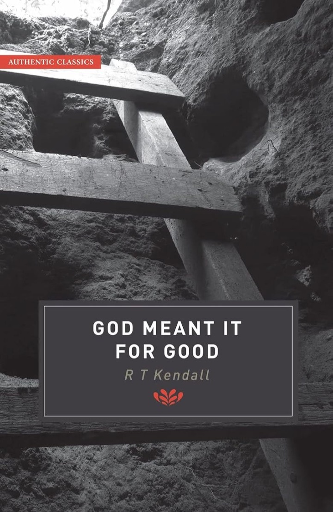

A London preacher walks through Genesis 37–50 one scene at a time and finds the same lesson under every one: let God clear your name, and learn to forgive the people who wrecked your life.
37 chapters49 sermons22 years apart1 family put back together

Canaan · age 17Egypt · second only to Pharaoh
The big idea
Vindication belongs to God, and forgiveness is how you get out of the pit
R. T. Kendall was minister of Westminster Chapel in London for exactly twenty-five years, from 1977 to 2002. In June 1982 he began a Sunday-evening series on Joseph that ran for more than a year. The book condenses those forty-nine sermons into thirty-seven chapters and still reads like preaching aimed at non-Christians.
The series came during the worst crisis of his ministry, over his new practice of inviting people to walk forward, unheard of in a Reformed chapel. The first time, after the first Joseph sermon, seven came.
The book is dedicated to Joseph Ton, a Romanian exile who once told Kendall, over a grudge he was nursing, to forgive totally: “Until you release them you will be in chains.” That phrase, total forgiveness, became the hinge of this book and later a whole book of its own.
His boldest claim: Joseph sat in the dungeon two extra years because he still carried a grudge. Begging to be mentioned to Pharaoh was an attempt to clear his own name.
Five threads Kendall pulls through the story
VindicationBeing cleared is God's job, and he does it only when we stop helping. “Vindication is God's prerogative.”
PreparationThe humbling discovery that you're still being prepared, by trials made for your task.
Learning to loveThe highest achievement. The heart fools us about whether we've forgiven.
How much God loves usJacob's guilt turns out groundless. God's plan was never aborted.
The gospel in outlineJoseph as a type of Christ; the gospel runs through like a scarlet thread.
17
Joseph's age when the story opens: favourite son, tattletale, wearing the coat.
+2 yrs
Extra time in the dungeon after the butler forgot him. Kendall reads it as God's sentence on self-promotion.
22 yrs
From the pit to the day Joseph reveals himself to his brothers.
17 yrs
Later still, after Jacob's death, comes his finest hour: forgiving them again.
Down twice, held down two more years, then lifted in a day
The trials came without warning, the lifting came suddenly, and the first dream was fulfilled last, twenty-two years on.
1Favourite son, 17The coat, the tales, two dreams told to the wrong audience.
2The pitA dry cistern at Dothan, then sold to Ishmaelites. No goodbye to his father.
3Potiphar's houseStarts at the bottom, rises to run the household.
4PrisonRefuses Potiphar's wife, is accused anyway, prospers again.
5The butler's dreamReads it right, then asks to be remembered. The butler forgets for two years.
6Before PharaohThirteen years after the pit. Ring, linen, chain, and all Egypt told to bow.
7The brothers bowSecond year of famine. The tests, Judah's plea, and the reveal, twenty-two years on.
8After Jacob diesSeventeen years later the brothers fear revenge. Joseph forgives them again.
Ages at markers 1, 7 and 8 follow the book's counts (17, plus 22 years, plus 17). Thirty at marker 6 is Genesis 41:46; Kendall says thirteen years. The book gives no length for Potiphar's house. Heights are illustrative.
Part I · Chapters 1–4
The pit
Kendall refuses to make the young Joseph look good. God chose a spoiled, self-righteous teenager, and that is the encouragement: you don't have to be finished to be chosen.
01A Diamond in the Rough
A real gift in an unready boy
The gift was in good shape. Joseph wasn't.
Three early mistakes. He carried tales, flaunted the coat, and told his dreams to the people least able to bear them. Flaunting a gift wins dislike, not admiration.
Jacob's favouritism did Joseph no favours. The coat did more for the father than the son.
God kept giving dreams anyway. A gift isn't withdrawn when abused, and using it proves nothing about the rest of you.
Like a sculptor chipping away whatever doesn't look like a horse, God chips away what isn't like his Son. Suffering is usually the chisel.
First parallel: Jacob rebuked the son who expected applause. The Father did far more than rebuke the Son who always pleased him.
02When Our Dreams Are Shattered
God's promise usually takes longer than you think
When God shows you he'll use you, you expect it next week. Moses waited forty years.
God motivates by appealing to our self-esteem, then has to operate on that same self-esteem before he can use us. Joseph wanted his brothers' admiration more than anything.
The worst thing, Kendall quotes Martyn Lloyd-Jones, is to succeed before you're ready. Spurgeon said that with twenty-five years left he'd spend twenty preparing.
The brothers saw the coat a mile off. Their motive was to test God: kill the dreamer and see what becomes of his dreams. Reuben talked them into a pit instead.
03From Riches to Rags
The brothers' plot already looks like Good Friday
Conspiracy, mockery, a cover-up, self-justification and one man who stayed respectably neutral.
Their logic was the crowd's at the cross: if he's really chosen, events will prove it. When nothing intervenes, the accusers feel cleared.
Reuben knew it was wrong but wouldn't stand alone. He pulled rank only far enough to save Joseph's life for later.
Then they sat down to eat. Selling him to traders felt mild next to murder, and they were content. That, says Kendall, is how a greater sin makes a lesser one seem right.
04When God Puts His Finger on One Man
Being chosen feels like everything going wrong
Offer God your life and he may take you at your word.
No advance notice. Part of what makes chastening work is that it comes suddenly.
The sore spot goes first. For Joseph, the coat: the thing dearest to him and most irritating to everyone else.
The frailty of others. He had to learn how low people, even family, can sink, so he'd never trust anyone but God too much.
Apparent despair in a situation with no precedent, and then no turning back. Lifted out of a waterless pit, he was glad to be going to Egypt.
Kendall's story · 1956
At nineteen, a student and weekend pastor in Tennessee, Kendall prayed to become the lowest possible shame for God's glory. Within two months his family called him a disgrace, and his grandmother took back the new Chevrolet she'd bought him. His coat of many colours, he says.
Hymn · On the comfort of being in God's hands when the bottom drops out
How firm a foundation, ye saints of the Lord, Is laid for your faith in His excellent Word! What more can He say than to you He hath said, To you, who for refuge to Jesus have fled?
“How Firm a Foundation” (1787), credited in the book to John KeithHymn · Joseph lifted out of the pit
Through many dangers, toils and snares, I have already come; ’Tis grace hath brought me safe thus far, And grace will lead me home.
John Newton, “Amazing Grace” (1779)
Part II · Chapters 5–11
Potiphar & prison
Joseph passes the hardest outward test and still isn't ready. The flaw that keeps him in the dungeon is invisible: he still wants to clear his own name.
05Starting a New Life
God breaks you from the past, then makes the new life bearable
You can't go back, and that is a favour.
Three mercies in Potiphar's house: rest from his enemies, the presence of the Lord (needed now that his father wasn't there), and success to keep him from despair.
His chief gift went on the shelf. Starting at the bottom brought out other abilities he'd need as governor.
Potiphar saw that Yahweh was with him, a name no Egyptian would know. So Joseph must have told him. Witness at work, says Kendall, by being the best worker.
06A New Kind of Trial
The test nobody saw him pass
A slave with no reputation and nothing to lose refuses anyway.
A new kind of trial is a compliment. It means you came through the old one without grumbling.
Many stay moral because they'd lose too much. Joseph's only reason was that it would be sin against God. When no one would know, Kendall argues, only love for God holds.
He rejects the excuses: a neglectful husband, an unhappy upbringing, or calling it love. Her lies afterwards proved it wasn't love.
Hymn · After Joseph resists Potiphar's wife
When through fiery trials thy pathways shall lie, My grace, all sufficient, shall be thy supply; The flame shall not hurt thee; I only design Thy dross to consume, and thy gold to refine.
“How Firm a Foundation” (1787), credited in the book to John Keith
07–08Falsely Accused · Losing the Battle to Win the War
Punished for doing right, and keeping quiet about it
Kendall calls this the most important test before God uses anyone greatly.
Joseph had no witness, no lawyer and no standing. Being helpless was a gift: if you try to defend yourself, God backs off and lets you make a mess of it.
Chastening isn't payback; the debt was settled at the cross. Job was upright and was tested anyway.
Joseph was never publicly cleared of the charge. Only Bible readers know he was innocent, as the risen Jesus appeared only to those who loved him.
In prison the Lord was with him again, so Joseph would know the first time wasn't luck.
09Vindication Delayed
Outwardly flawless, inwardly still pulling strings
Each trial, Kendall says, exists to reveal something about you that you hadn't seen.
The butler and baker gave Joseph back his real gift, and he used it to comfort men worse off than himself.
Then the old Joseph surfaced. He asked to be mentioned to Pharaoh and protested that he'd done nothing to deserve the dungeon.
God's answer was two more years. Kendall's line is that Joseph had to lose every trace of defensiveness, self-pity and manipulation before he could be trusted.
Two ways out of the dungeon
Kendall's reading of Genesis 40–41. Begged, the butler forgot. Left alone, he spoke up with all the facts when no one in Egypt had an answer. God succeeded exactly where Joseph had failed.
10The Truth about Predestination
Announcing a verdict isn't causing it
Joseph told one man he'd live and one he'd hang. He caused neither.
Both men were boxed in, and so willing to listen to a foreign prisoner they'd normally ignore. Kendall counts that as mercy.
He interpreted impartially, with a three-day deadline. Even the baker's verdict was a kindness: three days' warning.
Likewise Jesus' coming sends no one to hell. How God chooses is hidden, but it isn't by works, which Kendall calls the best news there is.
11When God's Time Has Come
When God's time has come, yours has too, and not before
God has bound himself to time. He waits for things too.
Signs the time has come: your strength is gone; something happens wholly outside you; human expertise fails; God succeeds where you failed; someone pleads your case unasked.
Many people do get to the top by promoting themselves. If God has stopped you doing it, Kendall says, you may be one he intends to lift himself.
Hymn · God reaching Joseph in the dungeon
Just as I am, without one plea, But that Thy blood was shed for me, And that Thou bidd’st me come to Thee, O Lamb of God, I come! I come!
Charlotte Elliott, “Just as I Am” (1835)
Part III · Chapters 12–19
The palace
Vindication arrives, but not the kind Joseph wanted. A pagan king affirms him; his brothers, the audience he cared about, are far away.
12–14Unlikely Convert · Spirit's Witness · On the Line
Pharaoh stakes his throne on a slave's word
Kendall tells the scene from Pharaoh's side, as a picture of how anyone comes to faith.
Even the most powerful man alive can be reached through a private anxiety. Refusing the magicians' answers was, for Kendall, the Spirit at work.
The butler is the model witness. He starts by admitting his faults, then simply tells what happened to him.
Pharaoh acted on the word of one servant, without investigating. Kendall: that's faith alone, and it scandalises people.
Pharaoh couldn't verify anything for fourteen years. He affirmed Joseph in front of his court the same day, and adopted his unsolicited plan to store a fifth of each harvest.
How you recognise the Spirit's witness
Peace, though trouble comes first.
Unhesitating authority, calmly given.
Coherence. Two dreams, one meaning.
It's personal. God was showing Pharaoh what he would do.
Confirmation. The doubling meant it was settled.
Simplicity. Once said, it's obvious.
Promise and oath
A promise
Conditional on faith and obedience
Kept if
An oath
Unconditional and settled
Will happen whatever
Kendall reads the doubled dream as both at once, which is why Joseph could tell a king it would happen soon.
15–16Humiliation Today · When God Clears His Name
A humiliation hidden inside the triumph
He wanted a ticket home and eleven brothers bowing. He got Egypt.
The vindication was threefold: spiritual (a man in whom the Spirit is), moral (the accused seducer called the most discreet man in Egypt) and intellectual (his gift recognised).
Would you buy shares in God's Reputation Limited at a hundred dollars? Nobody would have bought Joseph's. Christians clear God's name now; everyone else will at the last day.
Vindication can be hidden (true, but seen by few) or open. Even open, it may come through people you'd never have chosen.
17Finding Yourself
He came home in the one place he never wanted to be
“Home is not a where but a when,” Kendall writes: the moment you find God's will, wherever you are.
Three misconceptions had to go: he overrated getting his own way, and underrated both the Spirit's power to bring his gift to light and the security God planned, down to a wife.
It took thirteen years, not because God is slow but because we're less teachable than we think.
Hymn · Egypt as the home God had in mind all along
God moves in a mysterious way His wonders to perform; He plants His footsteps in the sea, And rides upon the storm.
William Cowper, “God Moves in a Mysterious Way” (1773)
18–19Mercy Set Forth · Mercy Withheld
Seven fat years, seven lean ones, both exactly as foretold
God keeps his word in mercy and in judgement alike.
Grain piled up like sand until they stopped counting. Kendall sees revival here: plenty that should leave stores for a later famine, as the New Testament did.
Then the famine hit every land, but Egypt had bread. Kendall reads the famine as a picture of God's wrath and Egypt's bread as mercy remembered in it.
God can be just and merciful at once only because a substitute bore the punishment.
Part IV · Chapters 20–29
The brothers
Twenty-two years on, the ten come to buy grain. Joseph knows them; they don't know him. What looks like cat and mouse is, for Kendall, careful kindness.
20Found Out
Being found out now is a mercy
The question was never whether their sin would surface, only when.
The worst thing is not getting caught. If God exposes your sin in this life, there's time to make it right.
Joseph had needed the same twenty-two years to get over his own grudges.
Nine signs God is about to uncover a covered sin
He starts treating you roughly, as Joseph did, like an enemy.
Being a true son suddenly matters most.
You get defensive about what's plainly true: we're honest men, not spies.
You're forced to mention the buried thing, if only as the brother who is no more.
He touches the sorest spot: Benjamin.
A hard proposal that seems unfair: all of you stay in prison.
He shuts you up to think: three days in custody.
He offers an alternative punishment: one brother bound for the rest.
What he wanted at first, he still wants: bring Benjamin.
Within three days the brothers were blaming their distress on what they'd done to Joseph, unaware he understood every word.
21–22Going by the Rules · A Troubled Conscience
He hears everything, turns away to weep, and waits
Joseph could have exposed them on the spot. Instead he filled their sacks.
Reuben's I-told-you-so is the moralising elder brother, piling guilt on the guilty. His own plan would have left Joseph to die in the pit.
Joseph spoke through an interpreter, overheard everything, and turned aside to weep. Kendall's picture of Christ now.
Finding their money returned should have been good news. To a guilty conscience it was terrifying. They asked what God had done to them.
Joseph was within reach of vindication and fed them instead: feed your enemy and leave vengeance to God.
23The Folly of Self-Pity
Jacob's self-pity, item by item
A very real feeling that never has a valid basis. Joseph was alive the whole time.
rooted in fearblames othersassumes the worstwants sympathyedges toward paranoiawon't take adviceblind to others' feelingsrepeats old mistakesthreatens guilt
All drawn from Jacob's lines in Genesis 42:36–38. In front of Reuben he called Benjamin the only son left, favouring him as he once favoured Joseph.
Only hard reality moved him. The grain ran out, and he had to send them back.
Judah offers himself as surety for Benjamin, a type of Christ. Jacob adds gifts and double money anyway.
Hymn · Judah offering himself as surety for Benjamin
Before the throne my surety stands, My name is written on His hands.
Charles Wesley, “Arise, My Soul, Arise” (1742)
24–25Forgiving Grace · Care for His Own
They expected a trap and were given dinner
Joseph didn't want their money or their donkeys. He wanted Benjamin.
Brought into the governor's house, they assumed he was out to get them. Fear can be God's doing without every conclusion we draw from it being right.
Their rehearsed speech about the money was answered with peace, and Simeon was brought out.
He sat them in birth order, to their astonishment, and gave Benjamin five times as much. Kendall reads Benjamin, the full brother, as every believer: a joint heir.
Joseph ate apart from them, though his heart was at their table. Kendall: when God hides his face, he is looking for somewhere to weep.
Hymn · Opening the chapter on God's forgiving grace
It is a thing most wonderful, Almost too wonderful to be, That God’s own Son should come from Heav’n, And die to save a child like me.
William Walsham How, “It Is a Thing Most Wonderful” (1872)Hymn · Joseph gave Benjamin his word, as God has given us His
What more can He say than to you He hath said, To you who for refuge to Jesus have fled?
“How Firm a Foundation” (1787), attributed variously to John Keene, Kirkham and John Keith
26Forgiving Ourselves
The silver cup was the kindest thing he did
Kendall used to think it was a prank. Now he thinks it's the key to the whole story.
Being sorry you were caught isn't a change of mind. Joseph had heard the first and needed to see the second.
So he handed them Benjamin's life on a plate. They could have gone home with a clean excuse.
Every one of them loaded his donkey and went back to the city. That was the proof.
The test was for their sake too. People can't forgive themselves partly because they fear they'd do it again. Finding out that you wouldn't is what sets you free.
27–28Justice of Mercy · Intercessory Prayer
Judah offers himself instead
The longest plea in Genesis, and the moment Joseph breaks.
True repentance: they fell before him, admitted they had no bargaining power, and offered to become his servants.
Judah reminded the governor of his own words, appealed to his pity for an old father, and asked to stay as a slave instead. Punishing a willing substitute would still be justice.
Kendall draws eight principles of intercession from it: come unworthy, as a servant; persist when ignored; accept God's right to decide; rehearse facts he knows; drop resentment; appeal to his heart; ask nothing for yourself.
It costs three things: carrying the burden, becoming vulnerable, and being willing to be expendable.
Kendall's story · 31 October 1955
Driving to Nashville early one morning, Kendall felt the presence of the Lord fill the car for perhaps half an hour. He saw, as he puts it, Jesus at the Father's right hand putting himself on the line for him. He says it shaped his later Oxford research on Calvin and Christ's intercession.
29Total Forgiveness
Forgiveness that makes it easy to believe you're forgiven
The one kind worth having, from God or from anyone.
Joseph had two jobs: convince them he was Joseph, and convince them he forgave them entirely. Kendall says the gospel has the same two.
His five marks of total forgiveness appear in the diagram below.
Romans 8:28 doesn't start working while you're still justifying what you did, or while you're trying to help God make it come out right.
Part V · Chapters 30–37
The family
The last chapters follow the brothers, who must accept forgiveness, and old Jacob, who must give up twenty-two years of grief.
30After Forgiveness, What?
Accept it, forgive yourself, then hurry
Refusing to forgive yourself, Kendall says, is a form of self-pity.
Believe his word about the future (five more years of famine) and accept God's purpose for your life.
Learn the family secret: it wasn't you, it was God.
But the next words were urgent: hurry home and tell your father. Kendall admits he once let God's sovereignty make him passive.
The promises come with conditions. Obey and you get Goshen, nearness to Joseph and safety for your children; refuse and you risk poverty.
Hymn · Joseph's instructions to his brothers, and the warning attached
Trust and obey, For there’s no other way To be happy in Jesus, But to trust and obey.
John H. Sammis, “Trust and Obey” (1887)
31The Joy of the Lord
Joseph weeping for joy
Our happiness is seeing how happy God is.
Four sources of Christ's joy: who he is, what he has done, the Father's pleasure, and seeing his people happy.
Pharaoh at once made Joseph's promise to his brothers law. Kendall sees Father and Son in perfect agreement.
Kendall's story · August 1945
His mother wept so hard driving that he asked why she was sad. She was happy: the war was over, and fathers would come home.
Hymn · Jesus welcomed home to heaven
Look, ye saints! The sight is glorious: See the Man of Sorrows now, From the fight returned victorious, Every knee to Him shall bow.
Thomas Kelly (words), William Owen (music), “Look, Ye Saints! The Sight Is Glorious” (1809)
32Lost Hope Revived
Twenty-two years built on a bloody coat
Jacob drew a firm conclusion from inconclusive evidence, and lived inside it.
The good news came by the unlikeliest messengers, forgiven men. Joseph's last instruction was not to quarrel on the way.
Jacob's heart fainted. Some news is too good to absorb, and we get used to our sorrows.
He revived when they told him all Joseph's words and he saw the wagons. Kendall thinks the brothers chose to confess, though Joseph never required it.
33–34Accepting · Anticipating the New and Different
An old man told to leave the Promised Land
Going down to Egypt had been off-limits for Abraham and Isaac; for Jacob it was the right move.
Jacob was over a hundred. Canaan was the promise; Isaac had been told not to go to Egypt. Moving felt like going against everything his fathers believed.
God made it attractive: Joseph was alive. Jacob had known no fresh experience of God in twenty-two years. At Beersheba God spoke to him again for the first time since.
The old promise from his ladder dream, to bring him back to this land, now made sense: he had to leave to be brought back.
How to know a change is God's: there's continuity with the past (sacrifice to the God of Isaac) and a clean break (he took everything). His word gets clearer, not muddier.
Hymn · Whatever touches your life becomes God's problem
When through the deep waters I call thee to go, The rivers of woe shall not overflow; For I will be with thee, thy troubles to bless, And sanctify to thee thy deepest distress.
“How Firm a Foundation” (1787), attributed variously to John Keene, Kirkham and John KeithHymn · Facing the new with the same God as before
Through many dangers, toils and snares I have already come; ’Tis grace hath brought me safe thus far, And grace will lead me home.
John Newton, “Amazing Grace” (1779)
35–36Keeps His Word · Another's Glory
The brothers as trophies of grace
They agreed to live the rest of their lives in the shadow of the brother they'd sold.
A sure sign of grace: staying unvindicated yourself and holding no bitterness toward the one who was. They even had to forgive God for choosing Joseph.
Joseph wasn't ashamed of them. He wept openly on his father's neck, had them admit to being shepherds, despised in Egypt, and presented five of them to Pharaoh himself.
Pharaoh never learned what they had done. Joseph's love buried it.
Pharaoh answered by turning to Joseph and reaffirming him. Kendall calls the scene an organisational chart of the Godhead.
Hymn · The book's closing invitation
Just as I am, without one plea, But that Thy blood was shed for me; And that Thou bidd’st me come to Thee, O Lamb of God, I come, I come!
Charlotte Elliott, “Just as I Am” (1835)
37God Meant It for Good
The finest hour comes after he has nothing left to gain
Jacob is dead, Joseph is at the top, and the brothers expect revenge at last.
They brought a deathbed plea for mercy from Jacob. Kendall suspects they made it up.
Joseph wept, Kendall thinks, from hurt. After seventeen years they still judged him by what they'd have done in his place.
The unbeliever calls the score mid-game. Kendall borrows a saying for the believer: “Don't tell the score in the middle of the game.”
Hebrews 11 remembers Joseph's orders about his bones. His heart was already elsewhere, with no room for a grudge.
Genesis opens and closes with the word good. What God calls good, Kendall says, is good enough.
“Ye thought evil against me; but God meant it unto good.”
Genesis 50:20 (KJV), the verse the book is named for
The core mechanism
Total forgiveness, tested twice
Five marks appear when Joseph reveals himself. Four proofs appear seventeen years later, when he had no reason left to keep it up.
Genesis 45 · the reveal (ch. 29)
Five marks of total forgiveness
Nobody else hears. He cleared the room, so no Egyptian would ever know what they'd done.
Put them at ease. He called them to come close, with no trace of vengeance in his face.
Don't let them punish themselves. He told them not to be grieved or angry with themselves.
Make self-forgiveness easy. He told them God had sent him ahead to save lives, which let them save face.
Protect them from the person who matters most. The message for Jacob said nothing about the sale.
17 years later
Genesis 50 · after Jacob's death (ch. 37)
Four proofs it was real
You don't want them afraid. Wanting someone slightly scared of you is a way to control them.
You won't pull rank. He asked whether he stood in God's place. He didn't use his office to extract respect.
You bind the wound completely. All of it was meant to be. This, too, lets them save face.
You keep doing it. He promised to provide for them and their children, the next day and every day after.
Both lists turn on one move, from what you did to what God was doing. Joseph still names the evil; the move is what lets the guilty live with themselves.
The scarlet thread
Joseph and Jesus, rung by rung
Kendall calls Joseph a type of Christ throughout, with one caveat: Joseph sinned and Jesus never did. His clearest parallels, in story order.
JosephJesus
His father's beloved son, given a robeThe beloved Son, who gives us a robe of righteousness
Hated and plotted against out of jealousyHanded over out of envy
Let's see what becomes of his dreamsCome down from the cross, if you are who you say
Never cleared before his accusersShown risen only to those who loved him
It isn't in me; God will answerThe Son can do nothing of himself
All Egypt must bow the kneeAll authority in heaven and earth
Hears every word, turns aside to weepTouched by our weakness at God's right hand
Not ashamed to call shepherds his brothersNot ashamed to call us brothers
Presents them to Pharaoh and speaks for themLives to intercede and present us to the Father
Other types: Simeon, held as a ransom; Judah, surety and intercessor, of the tribe Jesus came from; Pharaoh, granting all Joseph asks, as the Father.
Practices
What Kendall asks of readers
The book ends most chapters with an appeal to the reader. Gathered up, they fall into three situations.
When you've been wronged
Keep your hands offDon't defend yourself or manipulate. God steps back when you step in.
Lose the battleYou may never be publicly cleared. Accept it.
Feed your enemyWith vindication in reach, do them good instead.
Forgive the unrepentant tooTheir admission doesn't matter if you can see God's hand.
While you're waiting
Expect to be preparedTake sudden trials as preparation, not punishment, without grumbling.
Shelve your favourite giftDo the humble job well; other gifts may surface.
Don't nudge providenceDon't ask to be remembered. Wait for someone to plead your case unasked.
Re-check old assumptionsLike Jacob's bloody coat, some rest on thin evidence.
When you've done the wrong
Be glad to be found outExposure in this life is mercy. Blame no one else.
Come with no leverageAdmit helplessness, ask for mercy.
Accept forgivenessPleading unworthiness after you're forgiven is a hidden self-righteousness.
Forgive yourselfActing differently when the test returns shows you've changed.
Read alongside
Kendall reaches for the prodigal son himself. Both books are about a family torn apart and reconciled, with a grieving father at the centre. Henri Nouwen reads that homecoming through Rembrandt: The Return of the Prodigal Son.